The rejected outer shoulder and its correction, using identical native cameras, green paint and light rigs. The taper and convex nose are retained.
Desktop Mobile close-up | Desktop Mobile Garage | Actual measurements, commands and limitations
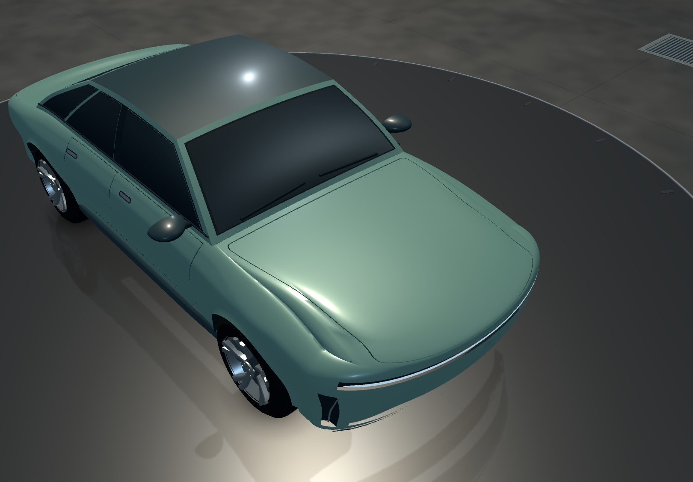
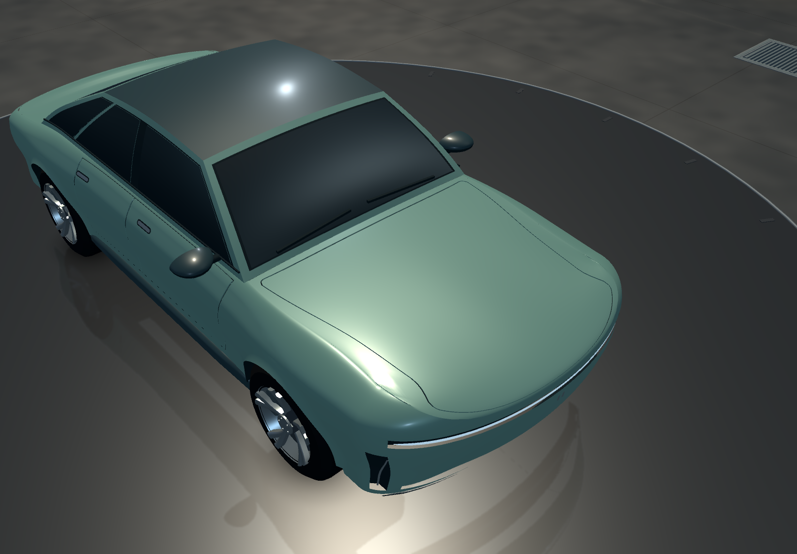
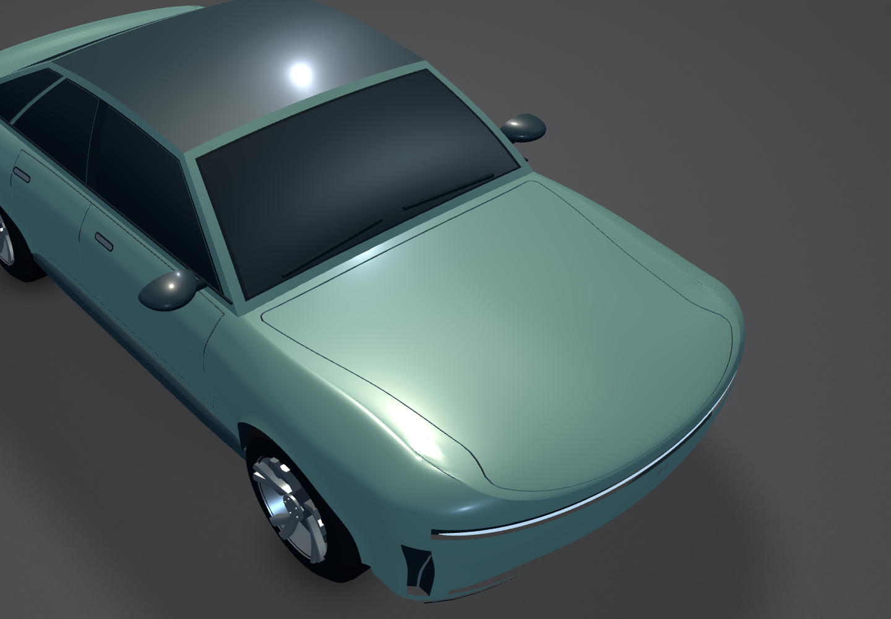
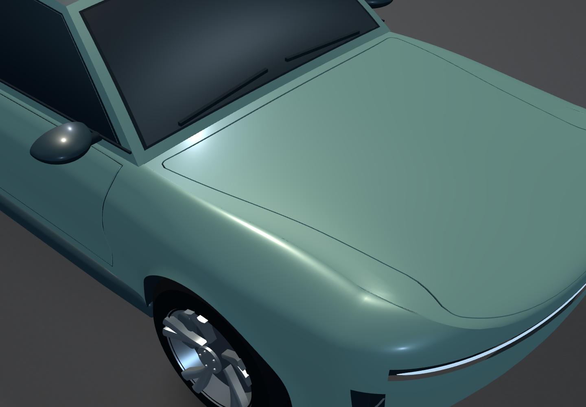
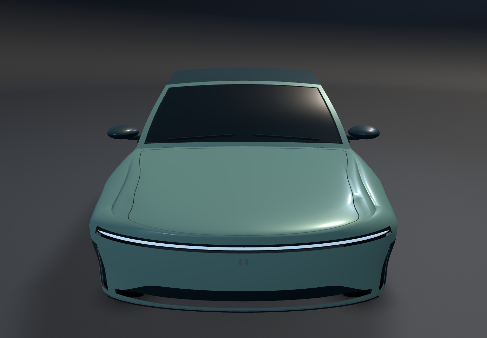
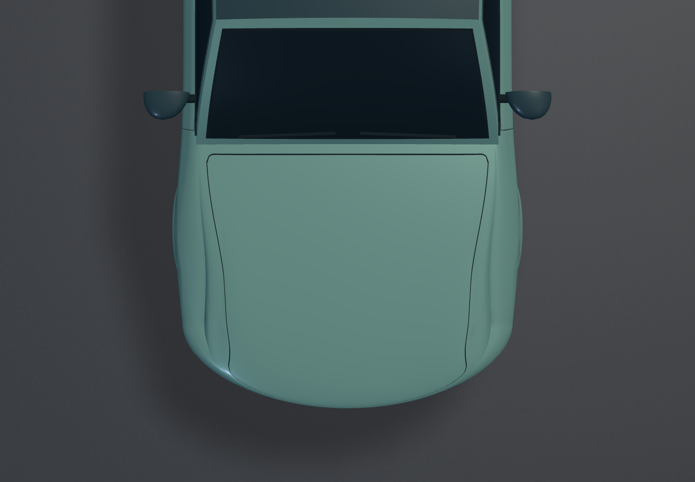
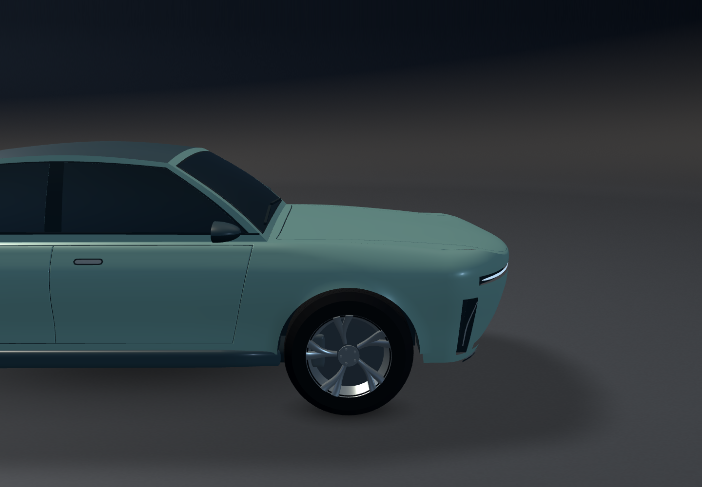
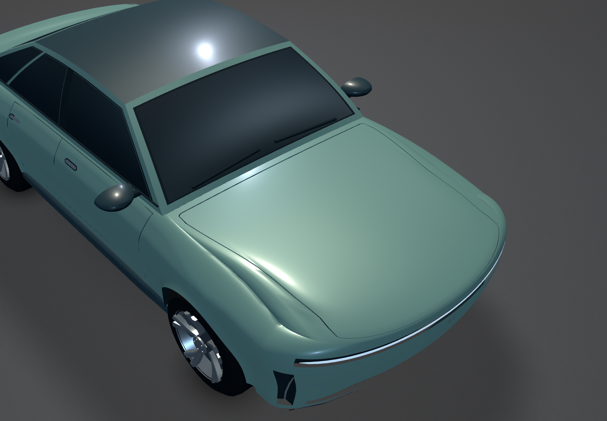
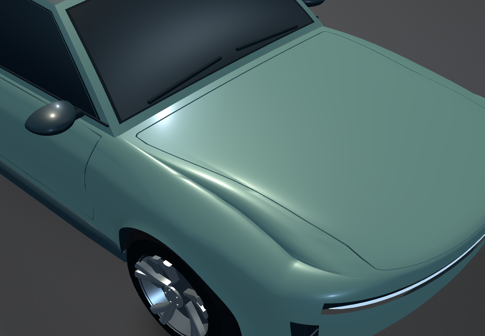
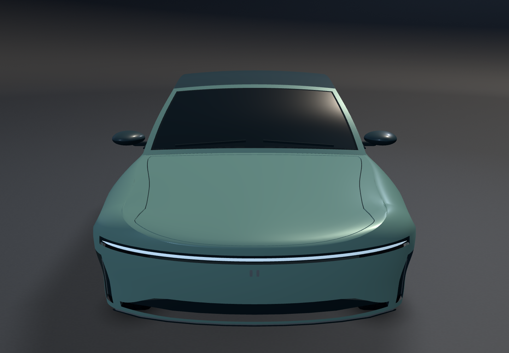
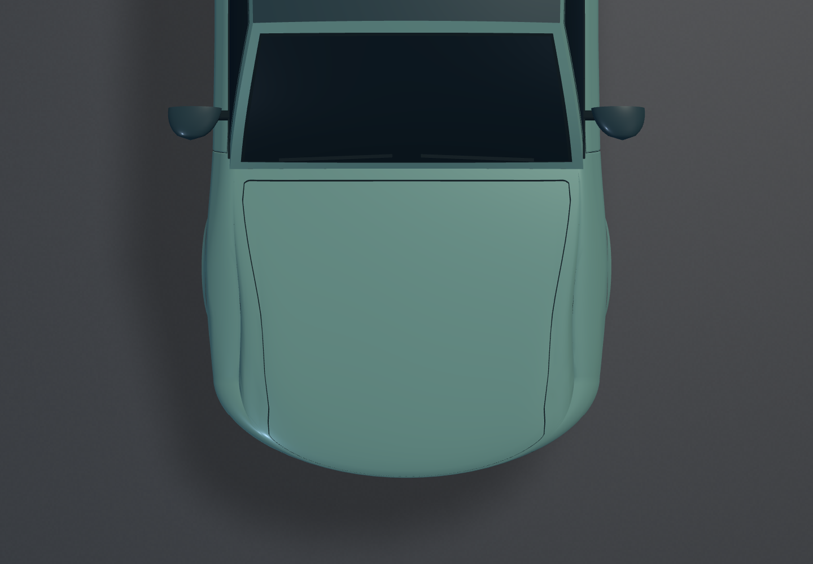
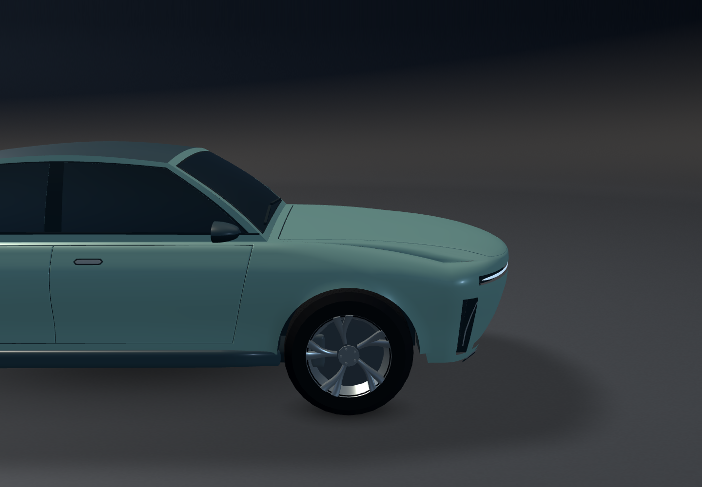